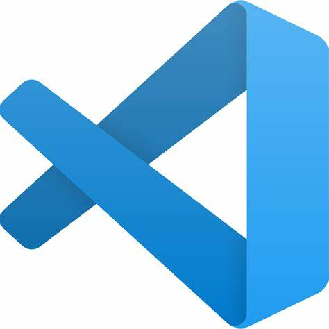

ueno.html

OIP-C.jpg

bing_icon.jpg
google_chrome_icon.jpg

github_icon.png
コンテンツにスキップ
検索またはにジャンプ.
プル要求s
問題
市場
探る
@linkTKG
リポジトリ
リポジトリを見つけます。
linkTKG.github.io
リンクTKG / linkTKG.github.io
最近の活動
GitHub 全体でアクションを実行する場合は、ここでそのアクティビティへのリンクを提供します。
コードなしで Git と GitHub を学びましょう!
Hello World ガイドを使用して、リポジトリを作成し、ブランチを開始し、コメントを書き込み、プルリクエストを開きます。
ダッシュボード
すべてのアクティビティ
自己紹介
GitHub で自己紹介をする最も簡単な方法は、リポジトリで README を作成することです。ここから始めることができます。
リンクTKGリードメ.md/
- 👋 Hi, I’m @linkTKG
- 👀 I’m interested in ...
- 🌱 I’m currently learning ...
- 💞️ I’m looking to collaborate on ...
- 📫 How to reach me ...
個人的なニュースフィードを設定する興味深いプロジェクトや人々を発見。
ニュースフィードを使用すると、視聴またはスターのリポジトリ、フォローしている人に関する最近のアクティビティに追いつきます。
プロチップ!フィードには、フォローしている人や、見ているリポジトリやスターのリポジトリからのイベントが表示されます。
ニュースフィードを購読する
© 2021 GitHub, Inc.
ブログ
に関しては
店
お問い合わせ
プライシング
API
訓練
地位
安全
条件
プライバシー
ドキュメント
ユニバースのスケジュールがライブになりました
10月27日と28日(PDT)に事実上ご参加ください。セキュリティ、DevOps、開発者の生産性、コミュニティ全体のセッションをチェックしてください。登録して、カスタマイズしたユニバーススケジュールの構築を開始します。